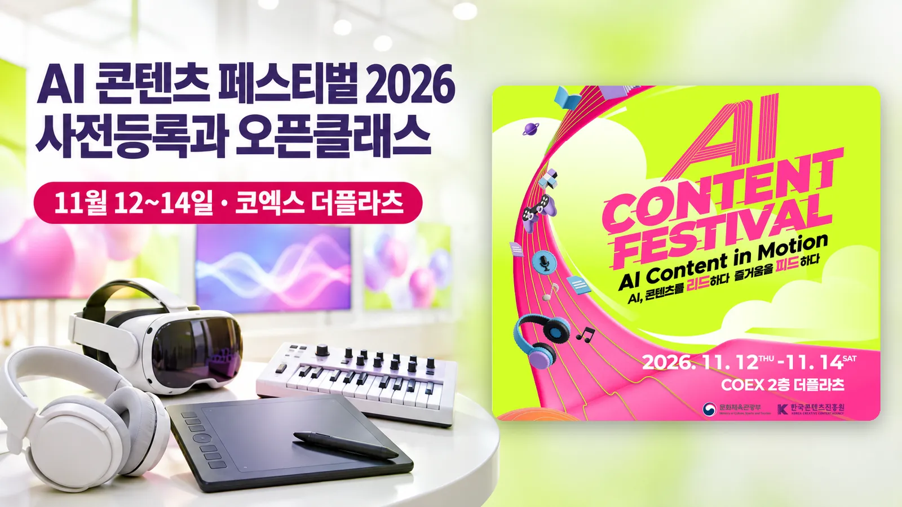

이지 자료실 · AI 창작
AI 콘텐츠 페스티벌 2026, 11월 11일 사전등록 마감과 오픈클래스 정리
작성 · 글 이지연 · 한국콘텐츠진흥원 공고 제2026-1036호(11.5)와 코엑스 전시 안내(11.9 확인) 기준
안녕하세요, AI융합 예술교육가 이지쌤 이지연입니다. 문화체육관광부와 한국콘텐츠진흥원이 여는 'AI 콘텐츠 페스티벌 2026'이 11월 12일(목)부터 14일(토)까지 서울 코엑스 2층 더플라츠에서 열립니다. 행사 사전등록은 11월 11일(수)까지 받습니다. 이 글에는 관람 시간과 등록 방법, 날짜별 콘퍼런스, 오픈클래스와 특별공연 일정을 한국콘텐츠진흥원 공고와 코엑스 안내를 기준으로 정리했습니다.
- 'AI 콘텐츠 페스티벌 2026'이 11월 12일(목)부터 14일(토)까지 서울 코엑스 2층 더플라츠에서 매일 오전 10시~오후 6시에 열립니다(입장 마감 오후 5시). 온라인 사전등록은 11월 11일(수)까지입니다.
- 한국콘텐츠진흥원 공고와 코엑스 안내에는 관람 대상 제한이 적혀 있지 않습니다. 관람료도 공고에는 없고, 이벤터스 신청 쪽에는 참가비가 무료로 표시돼 있습니다.
- 사흘 동안 메인무대 강연·대담 10개, 오픈클래스 7개, 14일 특별공연 2개가 열립니다. 오픈클래스와 특별공연은 행사 사전등록과 별도로 사전예약해야 하고, 남는 자리는 당일 현장에서 선착순으로 받습니다.

| 행사 | AI 콘텐츠 페스티벌 2026(AI CONTENT FESTIVAL 2026), 구호 'AI Content in Motion. AI, 콘텐츠를 리드하다 즐거움을 피드하다' |
|---|---|
| 주최·주관 | 주최 문화체육관광부, 주관 한국콘텐츠진흥원 |
| 언제 | 2026년 11월 12일(목)~14일(토), 매일 오전 10시~오후 6시(입장 마감 오후 5시) |
| 어디서 | 서울 강남구 코엑스 2층 더플라츠 |
| 신청 마감 | 온라인 사전등록 11월 11일(수)까지(이벤터스 신청 쪽 표시 오후 11시 59분). 오픈클래스·특별공연은 따로 사전예약 |
| 대상 | 공고와 코엑스 안내에 관람 대상 제한 안내 없음 |
| 비용 | 공고에 관람료 안내 없음. 이벤터스 신청 쪽 표시는 무료 |
| 문의 | 운영사무국 02-3475-2605(코엑스 안내), aicontentfestival.office@gmail.com |
| 사전등록 | 온라인 사전등록 쪽 |
1. AI 콘텐츠 페스티벌은 어떤 행사인가
한국콘텐츠진흥원은 11월 5일 공고 제2026-1036호로 행사를 알렸습니다. 코엑스 안내는 이 행사를 AI가 이끄는 콘텐츠 산업의 변화와 가능성을 한자리에서 보는 축제로 소개합니다.
행사는 세 공간에서 나뉘어 열립니다. 더플라츠에서는 12~14일 사흘 내내 전시·체험과 메인무대 프로그램이, 스타트업브랜치에서는 12~13일 기업과 바이어를 위한 비즈니스 미팅·피칭·네트워킹이, 스튜디오159에서는 14일 특별공연이 열립니다.
전시는 다섯 구역(트랙)으로 꾸며집니다. 스토리트랙에서는 AI로 만든 영상·음악을 보고 디지털 휴먼과 대화하고, 플레이트랙에서는 AI 드로잉·VR 게임·버추얼 캐릭터를 체험합니다. 메이크트랙에서는 이미지·음악·숏폼 영상을 생성형 AI로 직접 만들어 보고, 라이브트랙은 무대 프로그램, 크로스트랙은 교육·관광·커머스 같은 다른 산업과 결합한 AI를 보여 줍니다.
2. 날짜별 콘퍼런스(더플라츠 메인무대)
날마다 주제가 다릅니다. 12일은 'AI 산업·투자·비즈니스', 13일은 'AI 창작·제작·인재양성', 14일은 '미래 직업·디지털 윤리·창작 실험'입니다.
| 날짜·시간 | 제목 | 연사 |
|---|---|---|
| 12(목) 11:00 | 개막식 | |
| 12(목) 11:30 | 기조강연 〈트렌드 코리아 2027〉로 읽는 AI 시대 콘텐츠 생태계 | 김난도(서울대 명예교수) |
| 12(목) 13:00 | 특별대담 AI, 비즈니스의 판을 바꾸다 | 김난도·고삼석(동국대 석좌교수) |
| 12(목) 14:30 | AI가 바꾸는 일하는 방식과 워크플로우의 미래 | 이동재(뤼튼 공동창업자)·허성범(방송인·KAIST AI 연구원) |
| 12(목) 16:00 | AI 시대, 투자의 새로운 기준 | 원순재·김미희·정면영 |
| 13(금) 11:00 | AI는 ScreenX를 어떻게 바꾸고 있는가 | 이재선·박태장(CJ 4DPLEX) |
| 13(금) 14:30 | AI와 문화기술(CT)이 만날 때, 미래 인재는 무엇을 배우는가 | 안재홍·남주한·이성희·이원재(KAIST) |
| 13(금) 16:00 | AI로 넘어서는 창작의 경계: 콘텐츠 패러다임의 변화 | 이상욱·이수영·김광집·원승재 |
| 14(토) 11:00 | 궤도와 함께하는 미래직업 이야기 | 궤도(과학 크리에이터) |
| 14(토) 13:00 | AI 시대 올바른 디지털 윤리 | 표창원(표창원범죄과학연구소 소장) |
| 14(토) 14:30 | AI가 알려준 대로 만들면 진짜 될까? | 긱블·수드래곤 |
공고에 소개된 13일 세션 연사의 분야는 디지털 유산(안재홍), 음악 AI(남주한), 디지털휴먼·아바타(이성희), 데이터·사회연결망(이원재)입니다.
3. 오픈클래스와 특별공연
오픈클래스는 AI 도구를 직접 다뤄 보는 참여·실습 수업으로, 더플라츠 행사장 안 오픈클래스룸에서 열립니다. 특별공연은 14일 스튜디오159에서 열립니다.
| 날짜·시간 | 프로그램 | 진행 |
|---|---|---|
| 12(목) 13:00~14:30 | AI 활용 인터랙티브 드라마 기획·개발(오픈클래스) | MBC씨앤아이 AMCA |
| 12(목) 16:00~17:00 | AI로 기획하는 나만의 K-POP 아이돌(오픈클래스) | 지로(JIRO) |
| 13(금) 13:00~14:00 | AI와 함께 만드는 나만의 음악(오픈클래스) | 포자랩스(Pozalabs) |
| 13(금) 15:30~17:00 | 내가 만든 3D 게임 캐릭터로 클립 영상 만들기(오픈클래스) | 쏠드메이커스(MKRS) |
| 14(토) 10:30~12:00 | 나만의 버추얼 방송국: 무장비 AI 아바타 라이브 방송 체험(오픈클래스) | 페어엑스(FAIRX) |
| 14(토) 12:00~13:00 | AI 매직 콘서트 THE FUTURE(특별공연) | 홍승인(마술사) |
| 14(토) 13:00~14:30 | 90분 만에 완성하는 나의 첫 3D 게임(오픈클래스) | 핏펀즈(Fitfuns) |
| 14(토) 15:30~16:30 | 이오몽과 함께하는 AI 미니게임&콘서트(특별공연) | 이오몽(국악 버추얼 크리에이터) |
| 14(토) 15:30~17:00 | AI와 함께 만드는 스토리(오픈클래스) | 엘바(ELBA) |
공고는 프로그램과 운영 시간이 현장 사정에 따라 바뀔 수 있다고 적었습니다.
4. 참여 방법
한국콘텐츠진흥원 공고에 적힌 순서입니다.
- 행사 사전등록공고에 연결된 온라인 사전등록 쪽에서 등록합니다. 등록 쪽에는 이름과 휴대폰 번호를 넣는 칸이 있습니다. 마감은 11월 11일(수)입니다.
- 오픈클래스·특별공연 사전예약행사 사전등록과 별도로 사전예약합니다. 공고 본문에는 예약 쪽 주소가 따로 적혀 있지 않습니다.
- 현장 접수사전예약 뒤 남은 자리는 당일 현장에서 프로그램별로 선착순 접수합니다.
- 사전등록 경품11월 11일까지 사전등록하고 행사장을 찾은 사람 가운데 20명을 추첨해 올리브영 5,000원 상품권을 줍니다. 경품은 11월 30일(월)까지 보낼 예정입니다.
5. 장소와 문의처
장소는 서울 강남구 영동대로 513 코엑스 2층 더플라츠입니다. 문의는 운영사무국 전화 02-3475-2605(코엑스 안내)와 메일 aicontentfestival.office@gmail.com에서 받습니다.
신청 안내 온라인 사전등록은 11월 11일(수)까지입니다(이벤터스 신청 쪽 표시 기준 오후 11시 59분 마감). 오픈클래스와 특별공연 예약은 사전등록과 따로 합니다.
참고 자료
- 한국콘텐츠진흥원 공고 제2026-1036호 「2026년 AI 콘텐츠 페스티벌 개최」 (2026.11.5)
- 코엑스 전시 안내 「AI 콘텐츠 페스티벌 2026」 (2026.11.9 확인)
- AI 콘텐츠 페스티벌 2026 온라인 사전등록 쪽 (2026.11.9 확인)
- 이벤터스 「AI 콘텐츠 페스티벌 2026」 신청 쪽 (2026.11.9 확인)
이 글은 한국콘텐츠진흥원 공고와 코엑스 전시 안내를 2026년 11월 9일에 확인해 정리했습니다. 공고 본문은 안내 그림 한 장으로 올라와 있어, 그림에 함께 달린 글 설명을 기준으로 일정과 이름을 옮겼습니다. 공고와 코엑스 안내에는 관람료와 관람 대상이 적혀 있지 않아, 참가비는 이벤터스 신청 쪽 표시를 적었습니다. 운영사무국 전화번호는 코엑스 안내에만 있습니다.
함께 읽을 글